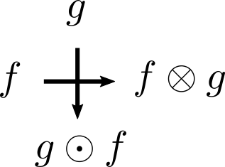
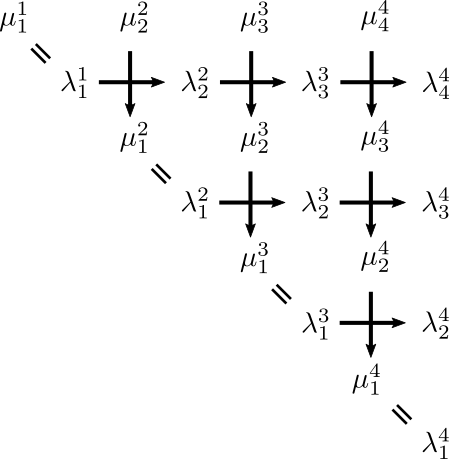
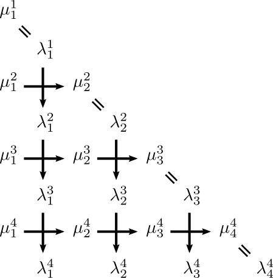

Type-A Pitman's transforms
pitman_transform robinson_schensted
In this article we derive the type-A pitman's transform from the Robinson-Schensted algorithms. We start with the column insertion version, which can be found in [{oconnell03b}] and [{biane-bougerol-oconnell05}]. Then we show the row insertion version, which is symmetric and quite similar to the column insertion version.
Rank-one
We start with the RS algorithm with column insertion that takes a stream of ones and twos as input: \(w \in \{1, 2\}^\infty\).
We write
\begin{align} S_1(n) = \sum_{i = 1 : n} 1_{w_i = 1}\\ S_2(n) = \sum_{i = 1 : n} 1_{w_i = 2} \end{align}to be number of ones and twos up to time \(n\). Then \((S_1, S_2)\) can be regarded as a two-dimensional walk (or path) going by \((1, 0)\) or \((0, 1)\) each time.
Recall the RS algorithm with column insertion applied to \(w\):
-
If \(w_n = 1\) then
- \(\lambda^1_1(n) = \lambda^1_1(n - 1) + 1\)
- \(\lambda^2_1(n) = \lambda^2_1(n - 1) + 1\)
-
Else (i.e. \(w_n = 2\))
-
if \(\lambda^1_1(n - 1) > \lambda^2_2(n - 1)\) then
- \(\lambda^2_2(n) = \lambda^2_2(n - 1) + 1\)
-
else (i.e. \(\lambda^1_1(n - 1) = \lambda^2_2(n - 1)\))
- \(\lambda^2_1(n) = \lambda^2_1(n - 1) + 1\)
-
if \(\lambda^1_1(n - 1) > \lambda^2_2(n - 1)\) then
Definition. We define binary operation \(\otimes\) and \(\odot\) on functions on \(\pint\) as follows:
\begin{align} f \otimes g (n) = \min_{0 \le i \le n} \{f(i) + g(n) - g(i)\} \\ f \odot g (n) = \max_{0 \le i \le n} \{f(i) + g(n) - g(i)\} \end{align}Claim. Given \((\lambda^k_j(n))_{1 \le j \le k \le 2}\) as the output Young tableau of column-inserting \(w_{1 : n}\), we have
\begin{align} (\lambda^2_1, \lambda^2_2) = (S_2 \odot S_1, S_1 \otimes S_2). \end{align}Proof. We use induction.
Basis. When \(n = 0\), \(\lambda^2_1(n) = \lambda^2_2(n) = S_2 \odot S_1(n) = S_1 \otimes S_2(n) = 0\).
Induction. Suppose \((\lambda^2_1(n - 1), \lambda^2_2(n - 1)) = ((S_2 \odot S_1)(n - 1), (S_1 \otimes S_2)(n - 1))\).
- When \(w_n = 1\), i.e. \(S_1(n) - S_1(n - 1) = 1\) and \(S_2(n) - S_2(n - 1) = 0\).
Write \(M(l) = \max_{1 \le k \le l} \{S_2(k) - S_1(k)\}\). Then \(M(n - 1) = M(n)\) since \(S_1\) increases at time \(n\). Therefore by induction hypothesis (IH)
\[ (S_2 \odot S_1) (n) = \lambda^2_1 (n - 1) + 1 = \lambda^2_1(n); \qquad (S_1 \otimes S_2) (n) = \lambda^2_2(n - 1) = \lambda^2_2(n). \]- When \(w_n = 2\), i.e. \(S_1(n) - S_1(n - 1) = 0\) and \(S_2(n) - S_2(n - 1) = 1\).
If \(\lambda^1_1(n - 1) > \lambda^2_2 (n - 1)\), by IH, this means
\[ S_1(n - 1) > S_1(\ell) + S_2(n - 1) - S_2(\ell) \qquad (1) \]where \(\ell\) is where \(S_2 - S_1\) achieves maximum on \(1 : n - 1\):
\[ M(n - 1) = S_2(\ell) - S_1(\ell). \](1) gives
\[ S_2(n - 1) - S_1(n - 1) < S_2(\ell) - S_1(\ell) \]So
\[ S_2(n) - S_1(n) = S_2(n - 1) - S_1(n - 1) + 1 \le S_2(\ell) - S_1(\ell) \]i.e. \(\ell\) is still the argmax. Hence
\begin{align} S_2 \odot S_1 (n) &= S_1(n) + M(n) = S_1(n - 1) + M(n - 1) = \lambda^2_1(n - 1) = \lambda^2_1 (n)\\ S_1 \otimes S_2 (n) &= S_2(n) - M(n) = 1 + S_2(n - 1) - M(n - 1) = \lambda^2_2(n - 1) + 1 = \lambda^2_2(n). \end{align}If \(\lambda^1_1(n - 1) = \lambda^2_2 (n - 1)\), then we have
\[ S_1(n - 1) = S_1(\ell) + S_2(n - 1) - S_2(\ell) \]i.e.
\[ S_2(n) - S_1(n) = S_2(n - 1) - S_1(n - 1) + 1 > S_2(\ell) - S_1(\ell). \]So
\begin{align} S_2 \odot S_1 (n) &= S_1(n) + M(n) = S_1(n - 1) + M(n - 1) + 1 = \lambda^2_1(n - 1) + 1 = \lambda^2_1(n)\\ S_1 \otimes S_2 (n) &= S_2(n) - M(n) = S_2(n - 1) + 1 - M(n - 1) - 1 = \lambda^2_2(n - 1) = \lambda^2_2(n). \end{align}\(\square\)
Rank-any
Now let us consider the case where the any positive integer \(k\) may be inserted to the Young tableau, and observe what happens. As before we define path \(S_k\) to be the number of \(k\)s so far:
\[ S_k(n) = \sum_{i \le n} 1_{w_i = k}. \qquad (1.3) \]When \(k\) is inserted, first \(S_k\) is increased by 1, and we try to insert \(k\) from \(S_k\) to the \(k\)th row.
-
If \(\lambda^{k - 1}_{k - 1}(n - 1) > \lambda^k_k (n - 1)\) then we may insert \(k\) to \(k\)th row:
- \(\lambda^k_k (n) = \lambda^k_k (n - 1) + 1\).
-
Now we try to insert \(k + 1\) to the \(k\)th row:
-
If \(\lambda^k_{k - 1}(n - 1) > \lambda^{k + 1}_k (n - 1)\) then we may insert \(k + 1\) to \(k\)th row
- \(\lambda^{k + 1}_k (n) = \lambda^{k + 1}_k(n - 1) + 1\)
- ....
-
If \(\lambda^k_{k - 1}(n - 1) > \lambda^{k + 1}_k (n - 1)\) then we may insert \(k + 1\) to \(k\)th row
-
else (i.e. \(\lambda^{k - 1}_{k - 1}(n - 1) = \lambda^k_k (n - 1)\)) we can not insert \(k\) from \(S_k\) to the \(k\)th row
- so we consider inserting \(k\) to the \(k - 1\)th row
-
If \(\lambda^{k - 1}_{k - 2}(n - 1) > \lambda^k_{k - 1}(n - 1)\) then we may insert \(k\) to \(k - 1\)th row:
- \(\lambda^k_{k - 1} (n) = \lambda^k_{k - 1} (n - 1) + 1\)
-
Now we try to insert \(k + 1\) to the \(k - 1\)th row:
- ...
One can see that the Rank-1 algorithm is iteratively applied here. So by the Claim, we can write
-
\(\lambda^k_k = \lambda^{k - 1}_{k - 1} \otimes S_k\)
-
\(\lambda^{k + 1}_k = \lambda^k_{k - 1} \otimes (S_{k + 1} \odot \lambda^k_k)\)
- ...
-
\(\lambda^k_{k - 1} = \lambda^{k - 1}_{k - 2} \otimes (S_k \odot \lambda^{k - 1}_{k - 1})\).
- ...
-
\(\lambda^{k + 1}_k = \lambda^k_{k - 1} \otimes (S_{k + 1} \odot \lambda^k_k)\)
The Claim for general rank case is thus
Claim 1.
\begin{align} \lambda^1_1 &= S_1 \\ \lambda^k_k &= \lambda^{k - 1}_{k - 1} \otimes S_k, \qquad k \ge 2 \\ \mu^{k}_{k - 1} &:= S_k \odot \lambda^{k - 1}_{k - 1} = S_k + \lambda^{k - 1}_{k - 1} - \lambda^k_k, \qquad k \ge 2 \\ \lambda^k_1 &= \mu^{k}_1, \qquad k \ge 2 \\ \lambda^k_j &= \lambda^{k - 1}_{j - 1} \otimes \mu^{k}_{j}, \qquad 1 < j < k \\ \mu^{k}_{j - 1} &:= \mu^{k}_{j} \odot \lambda^{k - 1}_{j - 1} = \mu^{k}_{j} + \lambda^{k - 1}_{j - 1} - \lambda^k_j, \qquad 1 < j < k \\ \end{align}We can write \(\mu^k_k := S_k\) to obtain a simpler discription:
\begin{align} \mu^k_k &:= S_k \\ \lambda^k_1 &= \mu^k_1 \\ (\lambda^k_j, \mu^k_{j - 1}) &= (\lambda^{k - 1}_{j - 1} \otimes \mu^k_j, \mu^k_j \odot \lambda^{k - 1}_{j - 1}) \qquad (1.5) \end{align}Corollary.
\begin{align} \lambda^k_k &= S_1 \otimes S_2 ... \otimes S_k \qquad (2) \\ \mu^k_j &= (\sum_{i = 1 : j} \lambda^k_i) - (\sum_{i = 1 : j - 1} \lambda^{k - 1}_i). \end{align}This can be represented in nice pictures. If we use the following notation to represent the \(\odot\) and \(\otimes\) operations:
 \(\qquad \qquad \qquad (2.5)\)
Then the RS algorithm, say of rank 3 can be illustrated as follows:
 \(\qquad \qquad \qquad (3)\)
Claim 2. Let \(G_k\) be defined as
\begin{align} G_1 (f) &= f \\ G_k (f_{1 : k}) &= (G_{k - 1} (f_2 \odot f_1, f_3 \odot (f_1 \otimes f_2), ..., f_k \odot (f_1 \otimes ... \otimes f_{k - 1})), f_1 \otimes ... \otimes f_k) \end{align}Then
\[ \lambda^k_{1 : k} = G_k(S_{1 : k}) \]Proof. Use induction.
Basis: \(G_1(S_1) = \lambda^1_1\) is true because when the input is a string of ones the output is a one-row tableau looking the same as the input string.
Induction: Suppose \(\lambda^{k - 1}_{1 : k - 1} = G_{k - 1}(S_{1 : k - 1})\). By (1.5) and (2) it suffices to show
\[ \lambda^k_{1 : k} = (G_{k - 1}(\mu^2_1, \mu^3_2, ..., \mu^k_{k - 1}), \lambda^k_k) \]namely
\[ G_{k - 1} (\mu^2_1, \mu^3_2, ..., \mu^k_{k - 1}) = \lambda^k_{1 : k - 1}, \]which is true by looking at picture (3), removing the first row there, and using the IH. \(\square\)
Pitman's transform
Definition. Given \(\ell\) a positive integer, let \(e^i\) for \(i = 1 : \ell\) be the \(i\)th natural basis such that \(e^i_j = \delta_{ij}\). let \((P_i)_{i = 1 : \ell - 1}\) be transformations of \(\ell\)-dimensional paths, defined as follows:
\[ (P_i f_{1 : \ell}) (n) = f(n) + \max_{0 \le k \le n} (f_{i + 1}(s) - f_i(s)) (e^i - e^{i + 1}) = (f_{1 : i - 1}, f_{i + 1} \odot f_i, f_i \otimes f_{i + 1}, f_{i + 2 : \ell}) \]namely \(P_i\) "performs" \(G_2\) on the \(i\)th and \(i + 1\)th coordinates of its input. Let
\[ H_k = P_1 P_2 P_1 P_3 P_2 P_1 ... P_k P_{k - 1} ... P_1 \]Claim 3. \(G_k = H_k\).
Proof. Similar to the proof of Claim 2. We show that \(G_k\) and \(H_k\) define the same transformation by both agreeing to the RS algorithm:
\[ H_k S_{1 : k} = H_{k - 1} P_k P_{k - 1} ... P_1 S_{1 : k} = H_{k - 1} (\mu^2_1, \mu^3_2, \mu^4_3, ... ,\mu^k_{k - 1}, \lambda^k_k) = \lambda^k_{1 : k} \]by IH. \(\square\)
Remark. \(H_k\) is the Pitman's transform of type A. It is claimed (see e.g. [{biane-bougerol-oconnell05}]) that the definition of \(H_k\) does not depend on the order of the \(P\)s as long as their subscripts form a reduced decomposition of the longest element of reflection group \(A_{k - 1}\):
\[ H_k = P_{i_1} P_{i_2} ... P_{i_m} \]whenever \(\sigma = s_{i_1} s_{i_2} ... s_{i_m}\) where \(\sigma = (123...k)\).
Row insertion
For row insertion, one can follow similar derivations to obtain similar path transformations.
Rank-one.
\begin{align} \lambda^2_1 &= S_1 \odot S_2 \\ \lambda^2_2 &= S_2 \otimes S_1 \end{align}Rank-any.
\begin{align} \mu^k_1 &= S_k, \qquad k \ge 1 \\ \lambda^k_k &= \mu^k_k, \qquad k \ge 1 \\ (\lambda^k_j, \mu^k_{j + 1}) &= (\lambda^{k - 1}_j \odot \mu^k_j, \mu^k_j \otimes \lambda^{k - 1}_j)\\ \end{align}And that
\begin{align} \lambda^k_1 &= S_1 \odot S_2 \odot ... \odot S_k \\ \mu^k_j &= (\sum_{i = 2 : k} \lambda^k_i) - (\sum_{i = 2 : k - 1} \lambda^{k - 1}_j). \end{align}Illustrated, we have (note the cross arrows have the same meaning as in (2.5))

We can also define the Pitman's transform. For \(\ell\)-dimensional path \(f\), let
\[ Q_i f := (f_{1 : i - 1}, f_{i + 1} \otimes f_i, f_i \odot f_{i + 1}, f_{i + 2 : \ell}). \]Then
Claim. Let \(w\) be a word, and \(S\) the corresponding walk / path as defined in (1.3). Let \((\lambda^i_j)\) be the output tableau obtained by row-inserting \(w\), then for any \(k\),
\[ (\lambda^k_k, \lambda^k_{k - 1}, ..., \lambda^k_1) = (Q_1 Q_2 Q_1 Q_3 Q_2 Q_1 ... Q_k Q_{k - 1} ... Q_1 S)_{1 : k}. \]References
- [biane-bougerol-oconnell05] Littelmann paths and Brownian paths, , Duke Mathematical Journal, Vol. 130, No. 1, p.127–167 2005.
- [oconnell03b] A path-transformation for random walks and the Robinson-Schensted correspondence, , Transactions of American Mathematical Society, Vol. 355, No. 9, p.3669–3697 2003.